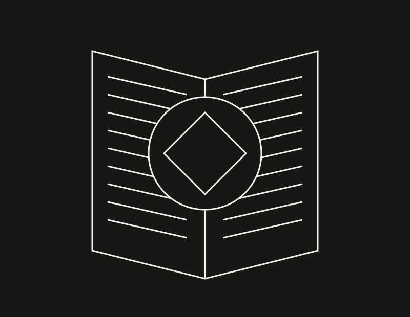

LECTURA / IMAGINACIÓN
Leer como un laberinto
Libros que invitan a perderse y volver a mirar.

Me atraen los relatos que no entregan todas sus respuestas de inmediato. Un libro puede abrir preguntas, mezclar lo cotidiano con lo fantástico o dejar una escena que seguimos pensando después.
Leer no siempre tiene que ser una carrera para terminar páginas. A veces prefiero detenerme en una idea, regresar a un párrafo y aceptar que mi interpretación puede cambiar.
En esta sección habrá espacio para literatura, fantasía, romance y preguntas sobre mundos posibles. Cada lectura se presentará desde una opinión personal y con el título de la obra cuando se trate de una reseña específica.
Mi invitación es sencilla: anota una pregunta que te dejó el libro. Compartir esa pregunta puede abrir una conversación más interesante que decidir solamente si el libro fue bueno o malo.
Imagen: ilustración vectorial original creada para Error 13.